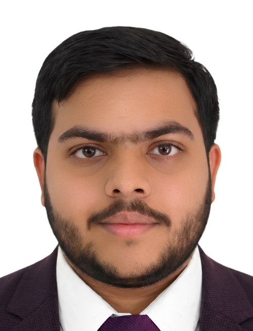

Kushagra Agrawal
Computer Engineering Master's Student · Erasmus Mundus Scholar
Åbo Akademi University (Finland) · EDISS Programme (EU)
Master's student specializing in edge AI, software engineering for machine learning, intelligent food systems, and multi-agent intelligence. I value clarity, reproducibility, and collaborative research.
Open for research collaboration, paper authorships, and industry partnerships.

Education
Åbo Akademi University
Master of Science (Technology) in Computer Engineering
EDISS Programme · EMJM Scholarship Holder
Erasmus Mundus Joint Master Degree in Engineering of Data-intensive Intelligent Software Systems
KIIT Deemed to be University
Bachelor of Technology in Computer Science Engineering (Honours)
Work Experience
Taipei Medical University & National Tsing Hua University
Research Intern
Jul 2025 – Aug 2025
MIDAS Lab, IIIT Delhi
Research Intern
May 2025 – Jul 2025
Defence Research & Development Organisation – DYSL-AI
Research Intern
May 2025 – Jun 2025
Indian Statistical Institute
Data Science Intern
Jul 2024 – Oct 2024
IEEE Silchar Subsection
Research Intern
Jul 2024 – Aug 2024
Selected Publications
All publicationsSelected Projects
Personalized AI Nutrition Chatbot
Oct 2024 – Dec 2024
Predictive Maintenance Analytics
Jul 2024 – Oct 2024
Fine-Tuning LLMs on CPU – Intel Unnati Industrial Training Program
Apr 2024 – Aug 2024
Medicinal Leaf Detection Model – Smart India Hackathon 2023
May 2023 – Sept 2023
Summer Schools & Workshops
Cambridge ELLIS Unit Summer School on Probabilistic Machine Learning
ELLIS Cambridge Unit, University of Cambridge, UK
Jul 2026
Read the storyCVIT Summer School on Artificial Intelligence
Centre for Visual Information Technology (CVIT), IIIT Hyderabad
Jul 2026 & Jul 2024
Quantum Computing: Circuits, Algorithms, and Machine Learning (QuCAM)
National Institute of Technology (NIT), Rourkela
Dec 2024
Machine Learning for Biomedical Signal Processing & Networking
ABV-Indian Institute of Information Technology and Management
Jun 2024 – Jul 2024
Find me online